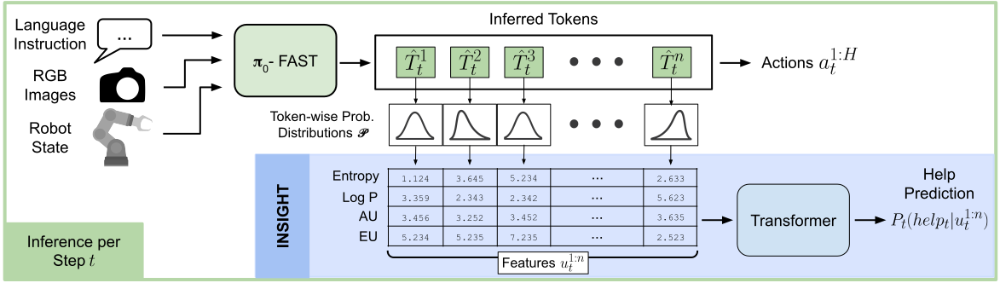

Authors: Ulas Berk Karli, Ziyao Shangguan, Tesca Fitzgerald
tip: click ▶ to play with sound
Abstract
Recent Vision–Language–Action (VLA) models exhibit strong generalization but lack mechanisms to anticipate failures and request timely human help. INSIGHT introduces a learning framework that leverages token‑level uncertainty signals to predict when intervention is needed. Built on top of π₀‑FAST, our approach extracts entropy, log‑probability, and Dirichlet‑based estimates of aleatoric and epistemic uncertainty, then trains compact transformer classifiers to map these sequences to help triggers. We study both strong and weak supervision regimes, comparing their effectiveness across in‑distribution and out‑of‑distribution tasks. Strong labels capture fine‑grained uncertainty dynamics for reliable detection, while weak labels, though noisier, remain competitive when training and evaluation align—offering scalability where dense annotation is impractical. Crucially, modeling temporal evolution of token‑level uncertainty yields far greater predictive power than static sequence‑level scores. This work provides the first systematic evaluation of uncertainty‑based introspection in VLAs, paving the way for active learning and real‑time error mitigation through selective human intervention.
Method

INSIGHT consumes token distributions from a VLA (e.g., π₀‑FAST), computes uncertainty features, and predicts help triggers online.
Results for the transformer (INSIGHT) and Conformal Prediction based on entropy (CP-E) and perplexity (CP-P).
Each box plot indicates mean (dashed horizontal lines) and median (solid horizontal lines) performance across folds.
Error bars indicate 1 standard deviation.
Significance by paired Wilcoxon (two-sided) across folds: * p<0.05, ** p<0.01.
Distribution-Shift Performance
Results for the transformer (INSIGHT) and Conformal Prediction based on entropy (CP-E) and perplexity (CP-P).
Each box plot indicates mean (dashed horizontal lines) and median (solid horizontal lines) performance across folds.
Error bars indicate 1 standard deviation.
Significance by paired Wilcoxon (two-sided) across folds: * p<0.05, ** p<0.01.
Large In-Distribution Performance
Results for the transformer (INSIGHT) and Conformal Prediction based on entropy (CP-E) and perplexity (CP-P).
Each box plot indicates mean (dashed horizontal lines) and median (solid horizontal lines) performance across folds.
Error bars indicate 1 standard deviation.
Significance by paired Wilcoxon (two-sided) across folds: * p<0.05, ** p<0.01.
Simulation-OOD
Performance under simulated OOD setup.
Help Timing & Frequency
Method
TTFH (fail) ↓
Triggerssucc↓
Triggersfail (≥ 1 ok)
Trigger Rate (success) ↓
Trigger Rate (fail) ↑
CP-W (Entropy)
6.891 ± 2.257
0.457 ± 0.302
1.721 ± 0.739
0.031 ± 0.020
0.118 ± 0.050
Strong Superv.
5.597 ± 0.809
0.710 ± 0.440
7.062 ± 1.225
0.047 ± 0.029
0.472 ± 0.081
Weak Superv.
7.929 ± 1.867
0.122 ± 0.172
1.566 ± 1.025
0.008 ± 0.011
0.105 ± 0.069
Time-to-first-help (TTFH; lower is better) and trigger statistics by method.
As desired, success episodes show lower trigger rates, while failing episodes trigger more frequently and earlier.
Rollouts
Filter by task, outcome, and dataset; click any video to watch with audio.
@inproceedings{TODO2026insight,
title={INSIGHT: Inference-time Sequence Introspection for Help-Triggering in Vision-Language-Action Models},
author={TODO},
booktitle={IEEE International Conference on Robotics and Automation (ICRA)},
year={2026}
}